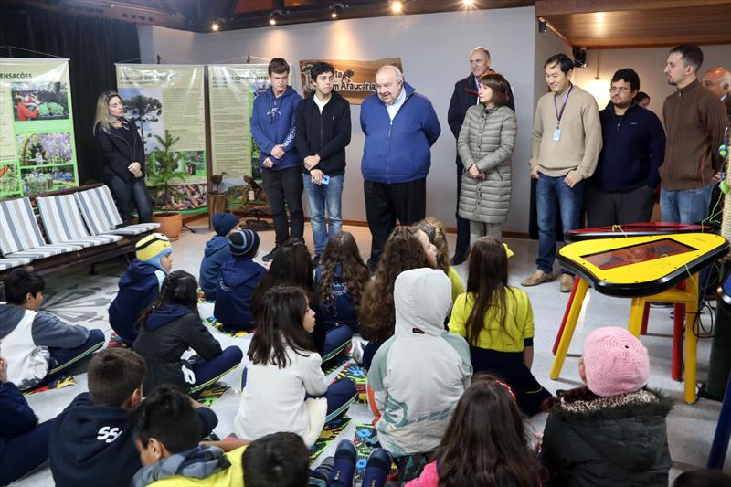

Desenvolvimento de três softwares voltados à educação ambiental infantil - O mapa virtual – apresentando o Jardim Botânico
com informações sobre os animais, as coleções vegetais e outros dados. Um jogo de memória sobre as regras do Jardim e outro com orientações para
realizar a reciclagem de lixo. Tanto o mapa como os jogos funcionam em mesas interativas com tela touch screen. Participaram da criação dos softwares
Celso Yoshikazu Ishida,
Henrique Daniel Cavet Martins,
Everton Vilhena Cardoso,
Leonardo Bruneti Gomes,
Luciano Wons,
Rychard Wiktor C. Malinowski, com apoio da Maria do Carmo Duarte Freitas.